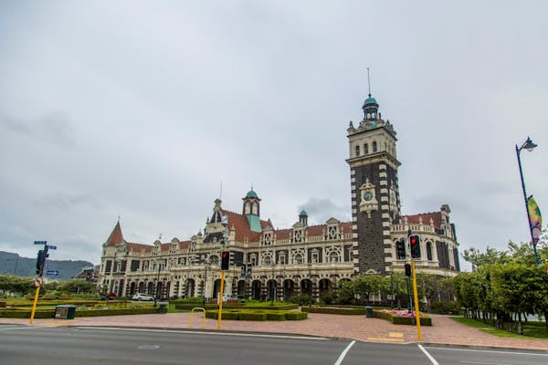

We enter the world alone, we leave the world alone. All hope abandon, ye who enter here! It is inevitable that some defeat will enter even the most victorious life. The human spirit is never finished when it is defeated... it is finished when it surrenders.I want a world where everything is welcome, everything is valid, everything is acknowledged, embraced, and accepted. To me, that's a perfect world. We all have something about ourselves that we'd change if we could in a perfect world, be it our body image, our financial status, our relationship, whatever.If you love life, don't waste time, for time is what life is made up of.” You're not defined by your past; you're prepared by it. You're stronger, more experienced, and you have greater confidence.” Life is what happens when you're busy making other plans.”
We shall not cease from exploration, and the end of all our exploring will be to arrive where we started and know the place for the first time. In wisdom gathered over time I have found that every experience is a form of exploration. Exploration is really the essence of the human spirit."The greatest discoveries have come from people who have looked at a standard situation and seen it differently.” “I soon realized that no journey carries one far unless, as it extends into the world around us, it goes an equal distance into the world within.” “Exploration is really the essence of the human spirit.”
